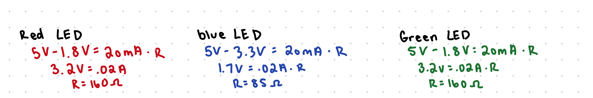
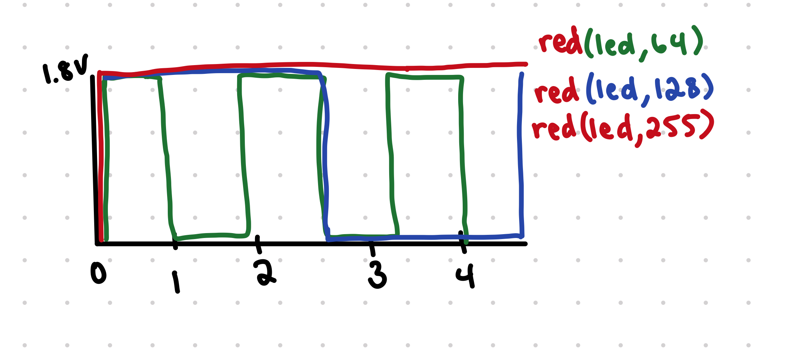
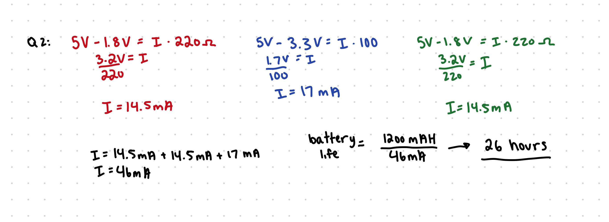

Below is all the documentation for assignment 2! To my left is my circut board
Below is all the documentation for assignment 2! To my left is my circut board
For my schematic, the first one on the left represents the pushbutton schematic. For that, I used a resistor of 10k because we were told thats best practice during class. For my pins 12, 11, 10, I used a 100 resistor for the blue LED, and 220 resistor for the red and green LEDS. I chose that based off my calculations below and chose the ones closest to my calculations values.

const int buttonPin = 2;
int buttonState = 0;
void setup() {
pinMode(12, OUTPUT);
pinMode(11, OUTPUT);
pinMode(10, OUTPUT);
pinMode(buttonPin, INPUT);
}
void loop() {
buttonState = digitalRead(buttonPin); // reads button pins state (High or Low)
if (buttonState == HIGH) { // if the button state is High (being pressed), will run code
digitalWrite(10, HIGH); //turns on LED 10 (red)
digitalWrite(11, HIGH); // turns on LED 11 (blue)
for (int brightness = 255; brightness >= 0; brightness -= 10) {
analogWrite(11, brightness); // changes blue brightness from 255 to 0
delay(75); // will delay each change in bright by 0.1 seconds
}
delay(500); // delays for 0.5 seconds
digitalWrite(11, LOW); // turns off blue LED
digitalWrite(10, LOW); // turns off red LED
buttonState = digitalRead(buttonPin);
if (buttonState == HIGH) {
digitalWrite(12, HIGH); // turns on blue LED
delay(500); // delays for 0.5 seconds
for (int brightness = 0; brightness < 255; brightness += 10) {
analogWrite(11, brightness); // turns green LED from 0 to 255
delay(75); // delays every 0.075 seconds
}
digitalWrite(12, LOW); // turns Green LED off
digitalWrite(11, LOW); // turns bue LED off
} else { // if button not being pressed will run code
for (int i = 10; i < 13; i++) {
digitalWrite(i, LOW); // turns all LEDS off
}
}
}
}
For my code, I used digitalWrite to turn on the LEDs to HIGH and then I used the analogWrite to fade them to 0. I did this so there was a noticeable change in the fade. My circut goes from purpleto red and then blue to yellow.

My circut first starts with the blue and red light on, and then it fades the blue light to 0 so only red is showing. Then the blue turns on and the green fades from 0 to 255, turning the LED from blue to yellow. I did this so you could noticably see the colors fade from one to another.
Q1: Draw a chart where the X axis is time and the Y axis is voltage. Draw 3 lines representing the voltage across an LED with analogWrite(led, 64), analogWrite(led, 128), and analogWrite(led,255).
For my graph, all the LEDs would be red, but I used different colors to easily see them on the graph. When it's at analogWrite(led, 64), it would be at full brightness 25% of the time, at analogWrite(led, 128) it would be full brightness 50% of the time and analogWrite(led, 255) is full brightness all the time.
Q2: Given your schematic, circuit, and firmware, assuming the only thing that draws current is your LEDs, how long would your circuit run if powered by a 1200 mAh battery?
I figured this out by first finding how much current was going through each LED. Then because the LEDs are in parallel, I added the currents together to get a total current of 46mA. Then to find the battery life, I divided the 1200mAh battery by the 46mA current where the mA would cancel out, to get a total of about 26 hours of battery life for that circut.